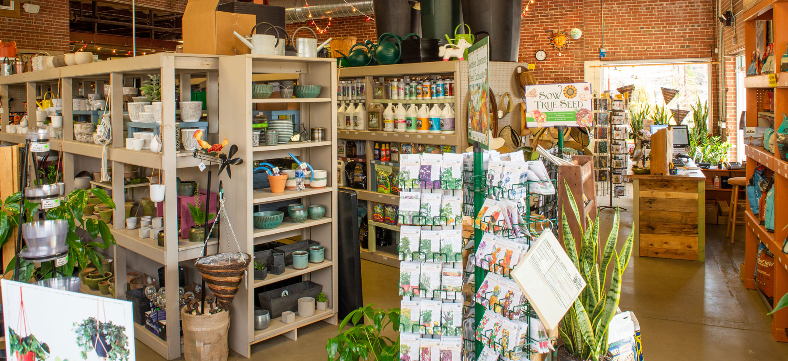

Garden Supply Stores
Find the best stores for all your gardening needs. From soil and fertilizers to tools and planters, these stores have it all.
- Green Thumb Supplies
- Urban Garden Center
- Plant It Earth
Find the best stores for all your gardening needs. From soil and fertilizers to tools and planters, these stores have it all.
Discover local nurseries with a variety of plants. Whether you're looking for flowers, shrubs, or vegetable seedlings, these nurseries offer a wide selection.
Join a community garden near you. Share gardening tips, grow your own food, and become part of a supportive community.